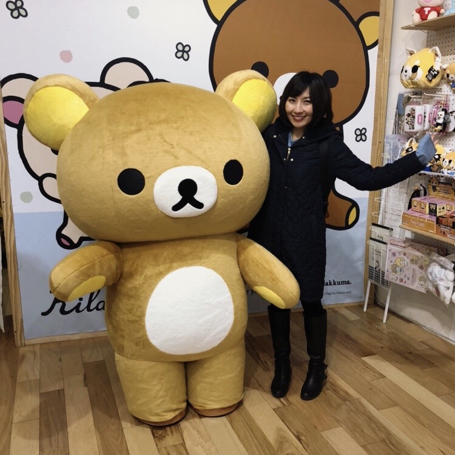

Welcome to My Portfolio /ᐠ｡ꞈ｡ᐟ\
I have started coding at Epicodus this week, and it has been fun ( ⓛ ω ⓛ *)
Hello, my name is Chisato
I rescued her at an animal shelter. We have been together almost for 8 years! She is very talkative and playful, and she loves wet food more than anything.I rescued her at an animal shelter. We have been together almost for 8 years! She is very talkative and playful, and she loves wet food more than anything. I rescued her at an animal shelter. We have been together almost for 8 years! She is very talkative and playful, and she loves wet food more than anything.I rescued her at an animal shelter. We have been together almost for 8 years! She is very talkative and playful, and she loves wet food more than anything.
This is my best friend Kiwi!

I rescued her at an animal shelter. We have been together almost for 8 years! She is very talkative and playful, and she loves wet food more than anything.
"I have been waiting for you!"